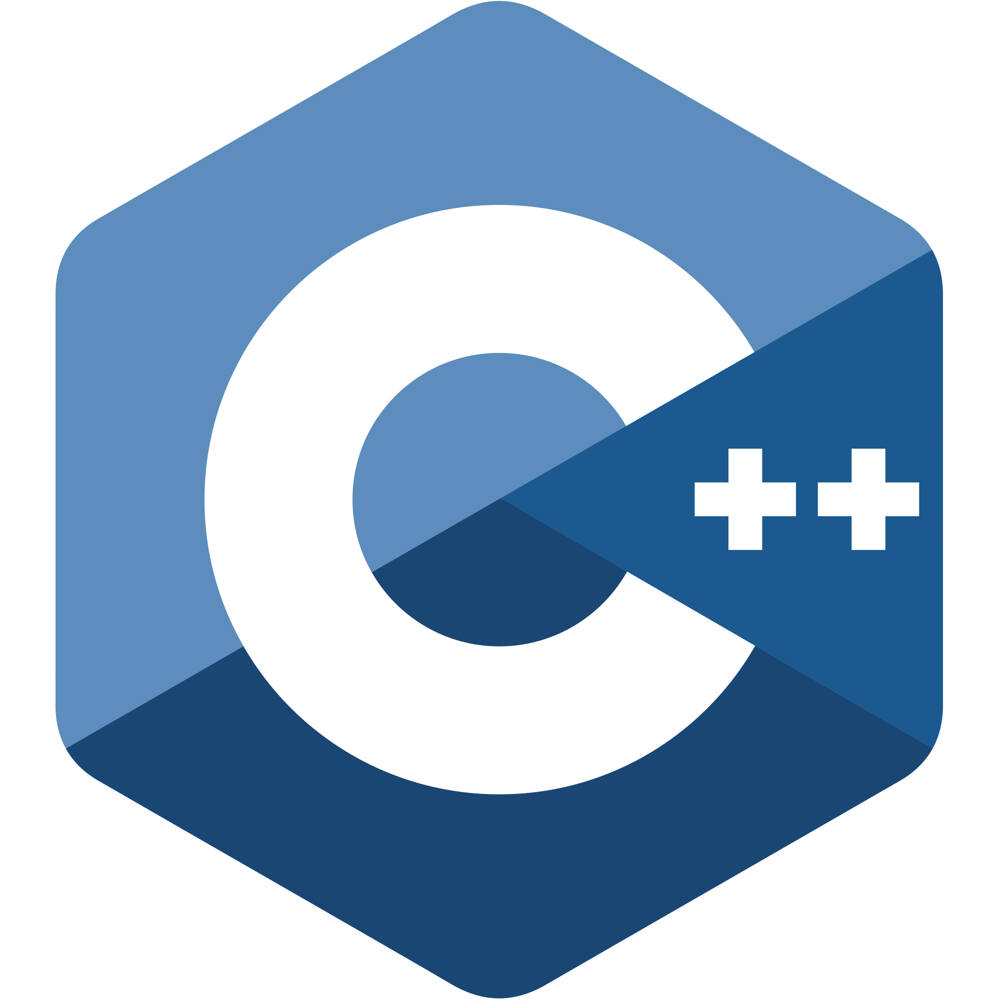
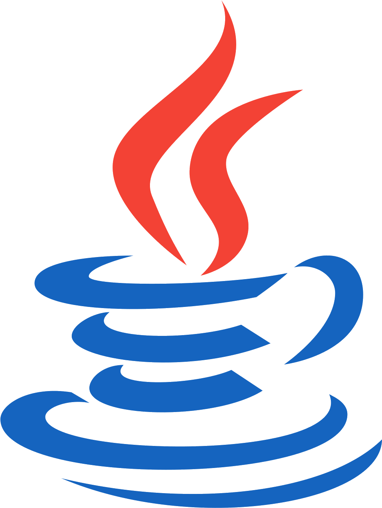
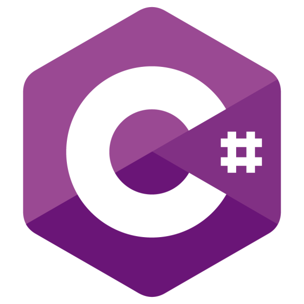
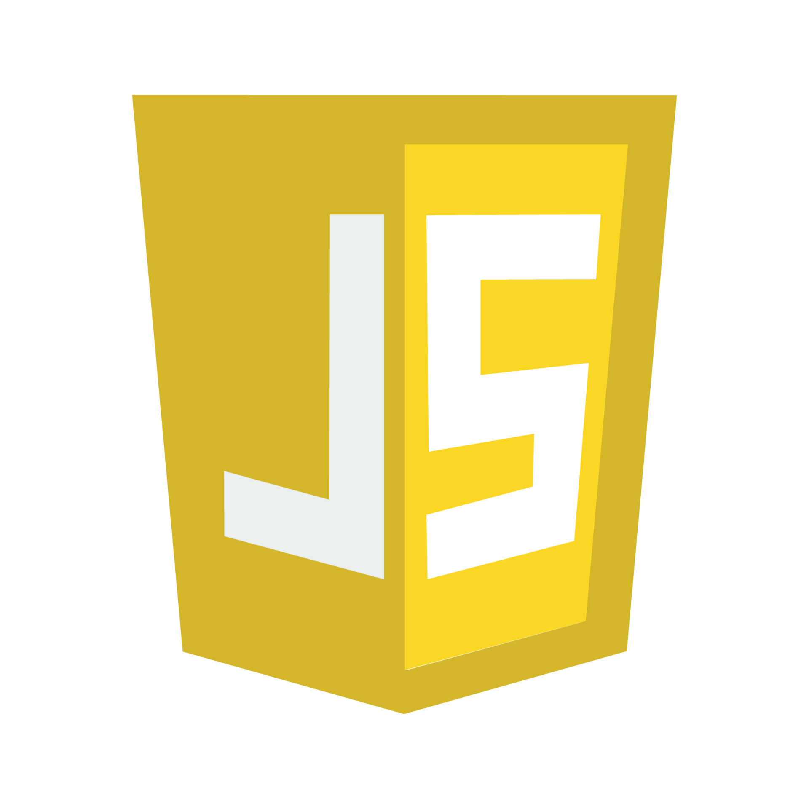
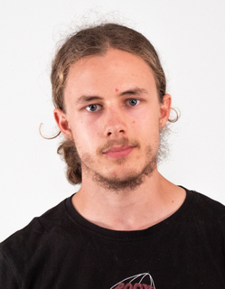
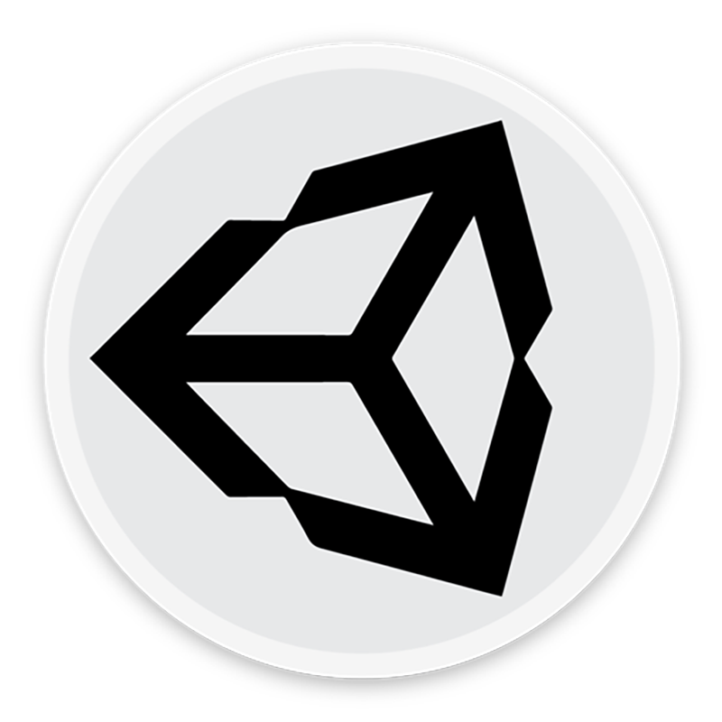
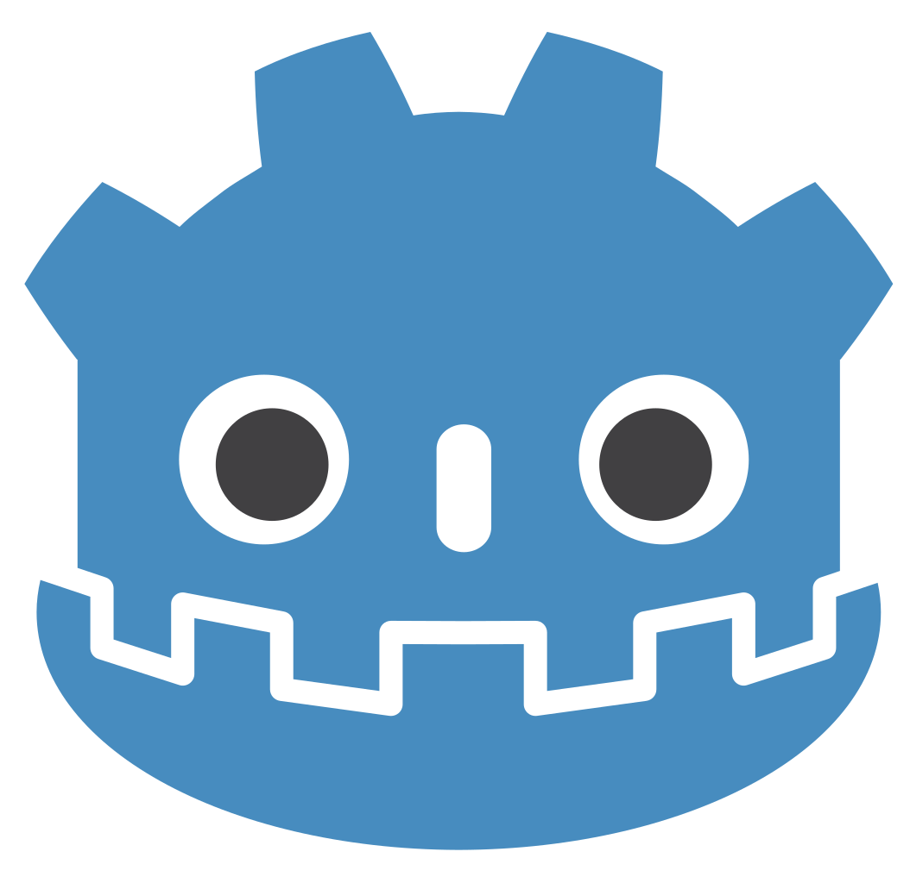
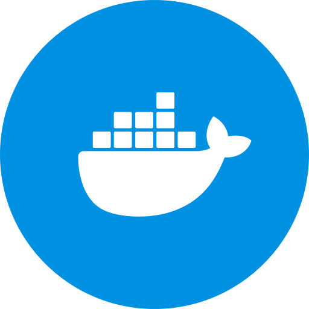
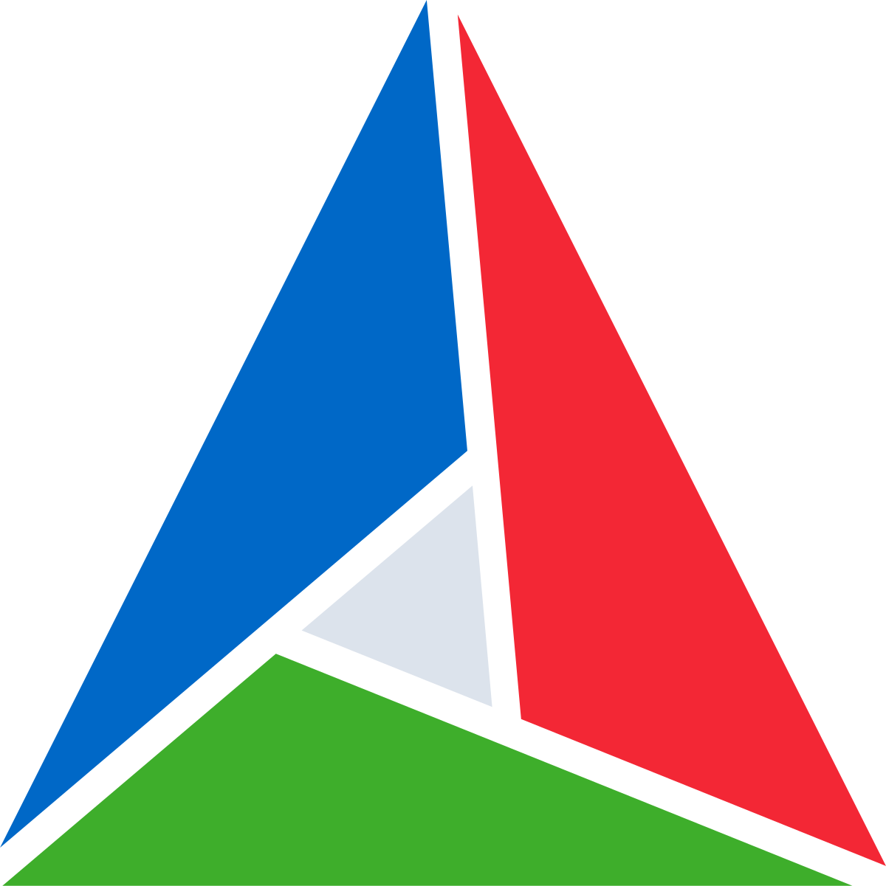

Langages
-

C/C++
-

Python
-

Java
-

C#
-

HTML
-

CSS
-

PHP
-

JavaScript

+33 7 68 66 34 27
3, Rue général Ferrié
38000 Grenoble, France

C/C++
Python

Java

C#
HTML
CSS
PHP

JavaScript

Unity

Godot
Qt

Git

Docker

Cmake
Projet personnel
2024-présent
Jeu de combat de style Hack&Slash en 2D
Réalisation avec le moteur de jeu Godot
Actuellement en phase de conception/prototypage
Laboratoire G-Scop, INP, Grenoble (38), France
2025-2026
Outil de modélisation du savoir pour des procédés de fabrication
Utilisation de C++ avec le framework Q
IUT2, dpt. INFO, UGA, Grenoble (38), France
2024-2025
Site ludique de valorisation des anciennes cartes francaises
Réalisation une application complexe de la conception à la réalisation
Travail dans une équipe de 6 personnes
Lycée Ferdinand Buisson, Voiron (38), France
2022-2023
Recherche de solutions algorithmiques pour construire l’enveloppe convexe d’un nuage de points
Groupe de 3 personnes
Implémentation de 2 algorithmes en python
IUT2, dpt. INFO, UGA, Grenoble (38), France
2023-2026Parcours Réalisation d’applications : conception, développement, validation
Lycée Ferdinand Buisson, Voiron (38), France
Juin 2023